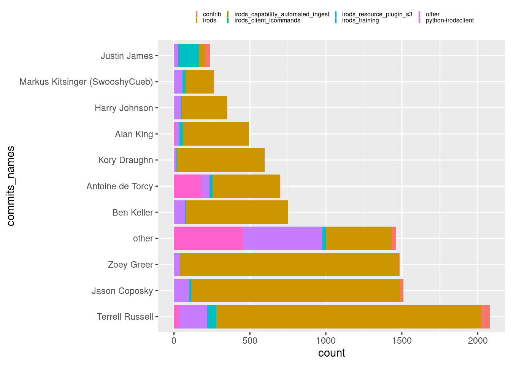

The data that drives our R workflow is just as important as the script. Nevertheless, the emphasis lies often on the R script when it comes to reproducibility, but that is not necessarily the most convenient in all circumstances.
There are several data management solutions available for R, mostly SQL based solutions, made accessible through the R package DBI. This requires data to be in a tabular format. iRODS can, however, simplify storing data as you are freed from strict formatting requirements (more about iRODS below). We leveraged iRODS’ functionality for R in the new package rirods. This means that you can move around and store any R object as you like.
Imagine you just created an R workflow, where you investigate the number of commits made by contributors for iRODS repositories.
To reproduce this new data set we could of course rerun the whole script, but imagine that we would have done a similar analysis for a much larger contingent of GitHub repositories. Then it becomes worthwhile to also save these intermediate transformations. We could save this data locally, but a much safer and convenient solution would be to save this in a dedicated data management system.
Here comes rirods into the picture. Install the package from CRAN or get the development version from GitHub.
install.packages("rirods")
We will demonstrate rirods usage by running a mock server on your localhost. The username and password are set to "martin" and "secret" for the example, but can be changed accordingly.
Note that one needs Bash and Docker (with docker-compose) to use this mock-up.
library(rirods)use_irods_demo("martin", "secret")
Do the following to connect with the iRODS demo server:
create_irods("http://localhost/irods-rest/0.9.3", "tempZone/home")
iauth("martin", "secret")
We follow the instructions from the output and create a project file with the server details and login to the system with our credentials.
Now let’s have a look at how this looks like within the iRODS server with ils(), which is somewhat similar to base R’s list.files().
ils(metadata =TRUE)
logical_path metadata
1 /tempZone/home/martin/commits.rds R object, commit history iRODS, data.frame
type
1 data_object
This makes the data discoverable on the iRODS server. Hence rirods not only helps you store and find data, but it also makes sharing data with your peers more straightforward.
As it seems you were not yet done with your analysis of the iRODS commit history. You put considerable effort in creating an informative plot, which lists commits according to the most popular repositories as well as authors.
This is also no problem for rirods, as long as we deal with an R object, we can store it in iRODS.
isaveRDS(plot_commits, "plot_commits.rds")
Later on we can directly get the object back in an R environment, thereby plotting the results.
ireadRDS("plot_commits.rds")

Let’s terminate the iRODS demo server and give a short introduction to iRODS.
stop_irods_demo()
The Integrated Rule-Oriented Data System (iRODS) is an open sourced data management software suite that covers the whole data life cycle from data generation, storage and recycling. The loosely constructed and highly configurable architecture of iRODS frees the user from strict formatting constrains and single-vendor solutions. Furthermore, the open-sourced and community supported nature of iRODS safeguards data storage and re-usability of data in terms of longevity and independently of future technological innovations.
You can watch the videos to get a better understanding of what iRODS brings to data management.